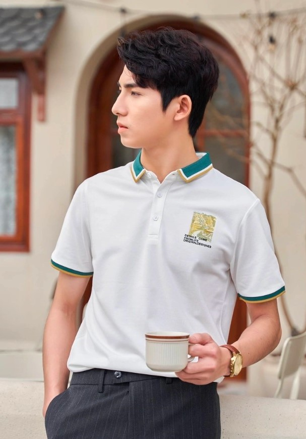

FiC
Thông tin cá nhân
Đổi mật khẩu
Đăng xuất
Tổng quan
Khách hàng
Đơn hàng
11
Sản phẩm
19
Khuyến mãi
Blog
Cài đặt
Cấu hình chung
Nhân viên
Vận chuyển
Brower Website
Thêm bài viết mới
Tiêu đề
Hình ảnh
Chọn hình ảnh

Nội dung
Áo polo, không chỉ là một món đồ thoải mái, năng động, mà còn là biểu tượng của sự lịch lãm và nam tính. Để tạo ra những bộ trang phục đẹp mắt với áo polo, bạn cần những kỹ thuật phối đồ linh hoạt và sáng tạo. Dưới đây là một hành trình chi tiết hơn để bạn có thể thực sự "chơi lớn" với chiếc áo polo trong tủ đồ của mình. 1. Học Cách Chọn Size Đúng Điều quan trọng nhất khi mặc áo polo là chọn size phù hợp với cơ thể. Áo quá rộng sẽ làm mất đi vẻ lịch lãm, trong khi áo quá chật có thể làm mất đi thoải mái. Hãy đảm bảo rằng áo ôm vừa, vừa vặn với vai và thân dưới, tạo nên hình dáng ưa nhìn. 2. Chơi với Màu Sắc Màu sắc chính là "điểm nhấn" của bất kỳ bộ trang phục nào. Áo polo có sẵn trong đủ màu, từ trung tính đến sặc sỡ. Hãy thử nghiệm và chọn màu sắc phù hợp với tông da của bạn. Màu pastel thường là lựa chọn an toàn và dễ kết hợp, trong khi màu đậm có thể tạo điểm nhấn mạnh mẽ. 3. Phối Áo Polo với Quần Jean Kết hợp áo polo với quần jean là một cách tuyệt vời để tạo ra phong cách smart-casual. Chọn quần jean vừa vặn, hoặc nếu bạn muốn thử thách, hãy thử một chiếc quần jean ống rộng để tạo nên phong cách retro và độc đáo. 4. Phụ Kiện: Sức Mạnh của Chi Tiết Nhỏ Không nên bỏ qua sức mạnh của phụ kiện. Một chiếc đồng hồ sang trọng, dây lưng thời trang, hoặc cặp kính mát có thể làm tăng điểm cho bộ trang phục của bạn, biến nó từ thông thường thành nổi bật. 5. Lớp Áo Ngoài - Sự Hài Hòa của Lịch Lãm Mùa lạnh, bạn có thể thêm lớp áo ngoài cho bộ trang phục của mình. Áo khoác bomber, blazer, hoặc thậm chí là áo vest đều là những lựa chọn tuyệt vời để tạo nên vẻ lịch lãm và phong cách. 6. Áo Polo Dài Tay - Sự Ấm Áp trong Phong Cách Đối mặt với thời tiết lạnh, áo polo dài tay là sự lựa chọn hoàn hảo. Chúng không chỉ giữ ấm mà còn tạo nên phong cách ấn tượng. Kết hợp chúng với quần dài và một chiếc áo khoác da để có vẻ ngoài thực sự bảnh bao. 7. Chơi với Quần Short Chinos Mùa hè, quần short chinos là sự kết hợp tuyệt vời với áo polo. Kết hợp chúng với đôi giày sneaker hoặc giày thể thao để tạo nên bức tranh năng động và thoải mái. 8. Lớp Áo Polo Dưới Vest Đối với những dịp quan trọng, áo polo có thể mặc với vest để tạo nên vẻ trang trí và lịch lãm. Điều này làm tăng tính thời trang và phá cách cho trang phục của bạn. 9. Chọn Giày Thông Minh Đừng quên về giày dép. Giày oxford, giày loafers hoặc thậm chí là một đôi sneaker thời trang đều là những sự chọn lựa phù hợp để hoàn thiện bức tranh phong cách của bạn. 10. Kết Hợp Họa Tiết Độc Đáo Nếu bạn muốn thách thức, hãy chơi với các họa tiết như sọc ngang, sọc dọc, hoặc họa tiết nhỏ. Sự sáng tạo trong lựa chọn họa tiết có thể tạo ra một bức tranh độc đáo và phá cách. Với những bước hướng dẫn trên, bạn đã sẵn sàng để trải nghiệm và sáng tạo với áo polo. Hãy để phong cách cá nhân của bạn tỏa sáng và thu hút ánh nhìn từ mọi người xung quanh. Áo polo không chỉ là một mảnh đồ, mà là biểu tượng của sự tự tin và phong cách nam tính.
Người viết
Thời gian
Hủy
Tạo mới
 FiC
FiC